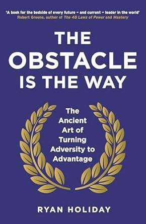
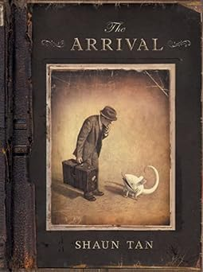

I recently visited South East Asia for the first time. Jakarta, Indonesia and Singapore, although only an little over an hour apart from each other, they could not be more different. Both cities have a dense population but Singapore seemed to prioritize visually appealing landscape while Jakarta represented a more practical approach to urban planning. Both were equally beautiful and I walked away wishing I had more time.
Although not quite a restaurant but rather an ice cream place: Saffron Rose Persian Ice Cream. They have a saffron Persian ice cream that is both fragrant and silky mixed with pistachios. I sometimes dream about it and always try to make it a pit stop during my travels to LA.
One of my favorite foods is Poke. It has a ton of fresh ingredients and it's a great way to combine whole foods and often raw fish in a delicious way that is new everytime.
| Book Name | Cover | Author | Summary |
|---|---|---|---|
| The Obstacle is the Way |  | Ryan Holiday | Ryan Holiday explores how obstalces are not roadblocks but rather a path to success through stoic principles, turning adversity into advantage. |
| The Arrival |  | Shaun Tan | Shaun Tan depicts the immigrant experience of the alienation felt from seeking a better life through emotional imagery in a wordless graphic novel. |
| Farenheit 451 | Ray Bradbury | A story of a future dystopian society where books are banned and society is overtaken by censorship and conformity. | |
| Crying in H Mart | Michelle Zauner | A memoir exploring Korean American identity centered around Michelle Zaun's relationship with her mother and the role of food and recollections. |